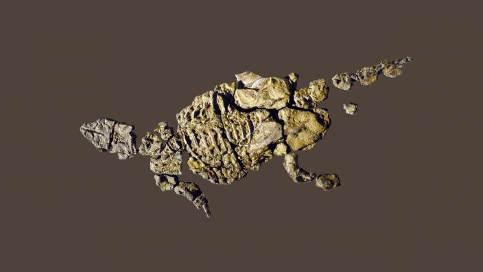

the Early Cretaceous, Piece of Queensland formed a huge island that is separate
from Australia. It is
a mix of floodplains and woodlands. Minmi was found in marine sediments but it was no doubt that it was
washed out to sea. (Australian Museum
2020)
1964, Dr Alan Bartholomai found a chalkstone nodule containing an ankylosaurian
skeleton in Queensland. In 1980, Ralph E. Molnar named and described the type of species the Minmi is.
Minmi was put as the name because it refers to strange bone elements found along the vertebrae.
(Wikipeida 2023).
For Time Period, the Minmi lived in the Cretaceous Period, (141 million years ago -
65 million years ago)
Feeding and Diets
The dinosaur Minmi enjoyed feeding on ferns and cycads. Its beaky mouth made it the ideal feast for
lower leaves. By examining its jaws and the nearby plants, scientists are able to make this conclusion.
Behaviors and Adaptations
Minmis like moving in packs with other Minmis because they felt safe like that. It would use its boned
back and sharp tail to defend itself. Besides that, they were not aggressive in any way unless they had
to be.
Communication
We are uncertain on how Minmi’s communicated, It was most likely using body
language or gestures. The noises they make could also show what type of behavior or expression they are
feeling. It is most certain that they used non-verbal communication amongst each other.
Life History Cycle
Minmi was originally a tiny dinosaur egg that later hatched into a young
dinosaur. It quickly grew into an adult with armor to fight off predators. Adults spent time eating
plants, but when the world changed a lot, Minmi and its others went extinct.
Breeding Behaviors
It's likely that minmi’s selected safe places to lay eggs and cared for its
newborns. It probably protected the eggs from any dangers with its bony armor. Even though we don't
fully understand it, Minmi's breeding habits probably compared to those of other dinosaurs.
Predators
Due to its small size, Minmi had to be on watch for larger predators like theropod dinosaurs. These carnivores considered Minmi to be possible prey. Minmi depended on its armor for defense and probably needed to be smart and quick to avoid being someone's meal if it were to survive.
Fossil Description
In comparison to other dinosaurs of the period, Minmis were quite small. It had a bone armor covering its back for protection, around the size of a small car. The range of dinosaurs at that time can be better understood because of Minmi fossil discoveries.

Fossil Record
Minmi's fossil record, discovered in Australia, includes bones and bony plates that protected its back. These discoveries help in an understanding of Minmi's appearance and way of life during the Cretaceous period, about 100 million years ago. They offer important clues about the past and the dinosaurs that lived there.